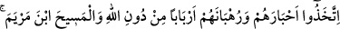
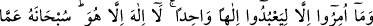
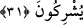

falancanın bağına gömülmüş.” dedi. Onunla birlikte gidip Tevrat’ı bulunduğu yerden
çıkardılar ve bu nüshayı Uzeyir’in kendilerine ezberinden yazdırdığı ile karşılaştırdılar.
İsrailoğulları, Uzeyr’in yazdırdığının bir harf bile eksiksiz ve bozulmamış olduğunu
görünce şöyle dediler:
“Allah Teâlâ, Tevrat’ı oğlundan başka birisinin kalbine yerleştirmiş olamaz.” İşte o
zaman eski yahudiler: “Uzeyr, Allah’ın oğludur.” sözünü söylemişlerdir.
“Hristiyanlar da: “Mesih, Allah’ın oğludur.” dediler”. Bu söz de hristiyanların
bazısına aittir. Onlar bu sözü, babasız bir çocuğun dünyaya gelmesini muhal gördükleri
için söylemişlerdir. Ya da anadan doğma körü ve alacalıyı ilah olmayan bir kişinin
iyileştirmesinin imkansız olduğunu düşündükleri için böyle söylemişlerdir.
“Bu” yani onlardan sâdır olan bu iki ağır/günah söz, “onların ağızlarıyla
geveledikleri sözleridir.” Kesin delil ve dayanağı olan bir söz değildir, sadece ağızla
söylenen mânâsız bir sözdür. Haddâdî der ki: Bu ifade şu mânâya gelmektedir: Onlar bu
sözlerinde ibareden (lafızdan) mânâya geçememektedirler. Çünkü onların kesin delilleri
yoktur. Çünkü onlar Allah’ın bir eş edinmediğini kabul ve itiraf ediyorlar. O halde nasıl
olur da çocuğu olduğunu iddia edebilirler?!
(Onlar bu sözlerini), “önceden inkar etmiş (olan müşrik)lerin sözlerine
benzetiyorlar.” Yani onların bu sözleri küfür ve çirkinlikte, kendilerinden öncekilerin
sözüne benziyor. Âyetteki “önceden inkar etmiş olanlar”, “Melekler, Allah’ın
kızlarıdır.” diyen veya “Lât ve Uzzâ, Allah’ın kızlarıdır.” diyen müşriklerdir.
“Allah onları kahretsin.” Bu, onların tamamının helak olması yönünde yapılmış bir
bedduadır. Allah’ın kendisine savaş ilan ettiği ve lânet ettiği kişi, helak olmuş demektir.
Bu ifade, hakikat mânâsını kasdetmek mümkün olmadığı için melzûmu zikredip lâzımı
kasdetmek kabilinden mecazdır. Ayrıca bu ifade, onların bu sözlerinin çirkinligi ve
fenalığı sebebiyle yadırgama (teaccüb) mânâsına da gelebilir. Bu durumda asıl
mânâdan, kastedilen mânâya geçişi sağlayan alâkadan gözden uzak tutulmuş olur.
“Nasıl da çevriliyorlar?!” Nasıl da haktan bâtıla döndürülüyorlar. Halbuki hak üzere
olduktan sonra bâtıla dönmek mümkün değildir. İstifham, hayret etme mânâsı
taşımaktadır.
31. (Yahudiler) Allah’ı bırakıp bilginlerini (hahamlarını), (Hristiyanlar ise)
rahiplerini ve Meryem oğlu Mesih’i rabler edindiler. Oysa kendilerine yalnız tek
ilâha ibadet etmeleri emredilmişti. O’ndan başka ilâh yoktur. O, onların ortak
koştukları şeylerden münezzehtir.